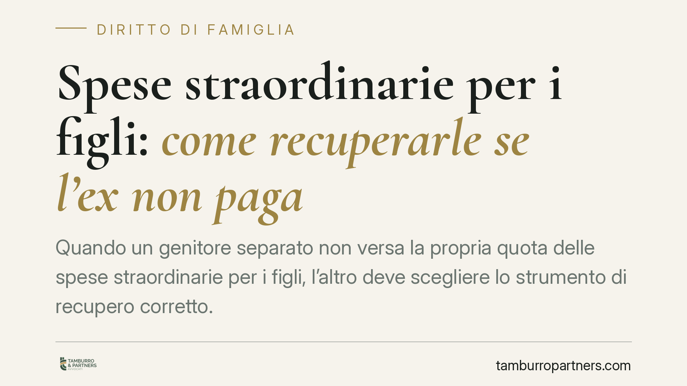

Spese straordinarie per i figli: come recuperarle se l'ex non paga
Quando un genitore separato non versa la propria quota delle spese straordinarie per i figli, l'altro deve scegliere lo strumento di recupero corretto. La Corte di Cassazione ha chiarito la differenza tra atto di precetto e decreto ingiuntivo, legandola alla presenza o meno di un accordo preventivo. Sbagliare via giudiziaria può bloccare l'intera procedura.

Il problema: spese ordinarie e spese straordinarie
Il mantenimento dei figli non si esaurisce nell'assegno mensile. Accanto alle spese ordinarie – incluse nell'assegno periodico e destinate ai bisogni quotidiani – esistono le cosiddette spese straordinarie: esborsi non ricorrenti, spesso rilevanti, come cure mediche specialistiche, interventi dentistici, attività sportive, viaggi di istruzione o tasse universitarie.
Il provvedimento del giudice (sentenza di separazione o divorzio) di regola ripartisce queste spese tra i genitori in percentuale, ma non ne quantifica l'importo in anticipo, perché per definizione sono imprevedibili. Da qui nasce il contenzioso quando uno dei due si rifiuta di pagare la propria quota.
Inquadramento: cosa ha chiarito la Cassazione
La Corte di Cassazione è intervenuta più volte per distinguere gli strumenti di recupero. Il punto decisivo è la natura dell'atto.
Le spese straordinarie si dividono in due categorie:
- spese che richiedono il previo accordo tra i genitori (o l'autorizzazione del giudice), tipicamente quelle voluttuarie o non necessarie;
- spese urgenti e necessarie (come le cure mediche indispensabili), che non presuppongono un consenso preventivo.
Questa distinzione determina la via legale percorribile.
Per le spese già cristallizzate in un titolo che ne consente la determinazione automatica – perché il provvedimento fissa criteri chiari e non serve alcun accordo ulteriore – è possibile procedere con l'atto di precetto: l'intimazione formale ad adempiere entro dieci giorni, che apre la strada al pignoramento. Il presupposto è avere già un titolo esecutivo pienamente utilizzabile.
Quando invece la spesa richiedeva un accordo preventivo, o quando l'importo va accertato caso per caso, il precetto non basta. Occorre passare dal decreto ingiuntivo (artt. 633 e seguenti c.p.c.), un procedimento che consente al giudice di verificare la sussistenza e la ripartizione del debito prima di autorizzare l'esecuzione forzata.
Perché la distinzione conta
La scelta dello strumento non è formale. Notificare un atto di precetto per spese che invece avrebbero richiesto un accertamento giudiziale espone il creditore all'opposizione all'esecuzione dell'ex coniuge, con il rischio concreto che tutta la procedura venga dichiarata inefficace. Si perde tempo, si sostengono costi e, nel frattempo, il credito resta insoddisfatto.
Al contrario, ricorrere al decreto ingiuntivo quando bastava un precetto significa attivare un procedimento più lungo e oneroso senza necessità.
Implicazioni pratiche per il genitore creditore
Chi ha anticipato una spesa straordinaria e non ottiene il rimborso deve anzitutto qualificare correttamente la spesa: era prevista dal provvedimento? Richiedeva l'accordo dell'altro genitore? È documentata?
La documentazione è determinante. Fatture, ricevute, prescrizioni mediche e comunicazioni scambiate con l'ex coniuge (anche via messaggio o email) sono la base probatoria su cui si regge sia il precetto sia il ricorso per decreto ingiuntivo.
È inoltre opportuno conservare traccia di ogni tentativo di concordare la spesa: la prova dell'informativa preventiva rafforza la posizione di chi ha anticipato l'esborso, soprattutto per le voci non urgenti.
Cosa fare in concreto
- Rileggere il provvedimento di separazione o divorzio e individuare come sono ripartite le spese straordinarie e se è richiesto l'accordo preventivo.
- Raccogliere tutta la documentazione: fatture quietanzate, ricevute, prescrizioni e comunicazioni scambiate con l'altro genitore.
- Inviare una richiesta scritta di rimborso, con termine e importo dettagliato: spesso risolve senza contenzioso e, in ogni caso, precostituisce la prova.
- Verificare la via corretta prima di agire: precetto se il titolo consente la determinazione automatica del debito, decreto ingiuntivo se serve l'accertamento.
- Rivolgersi a un legale per la qualificazione della spesa e la scelta dello strumento, così da evitare opposizioni che vanifichino l'azione.
Una valutazione preliminare accurata riduce il rischio di procedure inefficaci e accelera il recupero.
Disclaimer
Contributo informativo a cura di Tamburro & Partners - Avv. Giuseppe Tamburro. Non costituisce parere legale.
Ogni famiglia ha il suo equilibrio.
Separazione, divorzio, affidamento, assegno: se vuoi un confronto riservato su una specifica situazione, scrivi allo studio. Ti rispondiamo entro un giorno lavorativo.